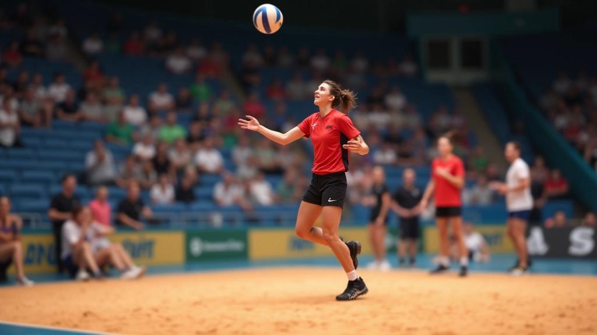
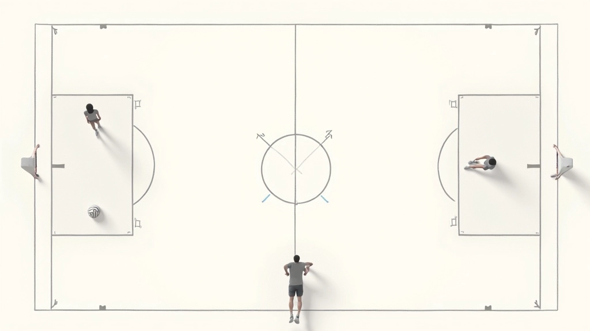
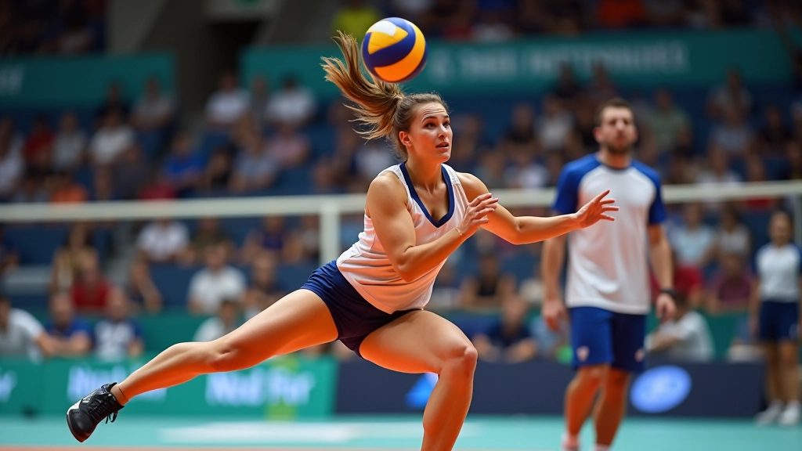

أساسيات الحركة والتمركز الدفاعي
تعلم كيفية اتخاذ المواقع الصحيحة والحركة الفعالة في المنطقة الدفاعية
استكشف الأنماط التكتيكية المختلفة والتغطية الدفاعية التي يستخدمها الفريق. تعرف على كيفية التنسيق مع زملائك وضمان عدم ترك أي فراغات في الدفاع. من خلال هذا الدليل الشامل، ستتعلم كيفية قراءة تشكيلات الهجوم والاستجابة بسرعة وفعالية.
التكتيكات الدفاعية ليست عشوائية — إنها خطة مدروسة. كل لاعب في الفريق له دور محدد، وأنت كليبرو تتحمل المسؤولية الأساسية عن التنسيق بين جميع المدافعين. الهدف بسيط: تغطية كل المساحات وعدم ترك أي فراغات للكرات.
عندما تفهم النمط التكتيكي الذي يستخدمه فريقك، ستتمكن من توقع الحركات وتحضير نفسك بشكل أفضل. هذا لا يحتاج إلى ذكاء خاص — بل يحتاج إلى ممارسة وتركيز على التفاصيل.
ضمان عدم وجود فراغات في المنطقة الدفاعية
التواصل الفعال والحركات المتزامنة
توقع أماكن الهجوم والاستجابة السريعة
هناك عدة أنماط تكتيكية شهيرة يستخدمها الفريقات. النمط الأساسي يُعرف باسم "6-2" وهو يعني أن لديك 6 لاعبين في الدفاع واثنين متخصصين في الهجوم. في هذا النمط، دورك كليبرو حاسم جداً.
نمط آخر شائع هو "4-2"، وفيه تركيز أكثر على التوازن بين الهجوم والدفاع. لكن الأهم هو أن تفهم دورك في كل نمط — أنت الموجه الرئيسي للدفاع. عندما تشعر أن لاعباً ما في موقع ضعيف، تنبهه فوراً.
افهم الأماكن التي يقف فيها كل لاعب وكيف يتحركون
تحدث مع فريقك وأخبرهم بالفراغات والحركات
تحرك بسرعة لسد أي فراغات قبل وصول الكرة

هذا الدليل يوفر معلومات تعليمية حول التكتيكات الدفاعية في الكرة الطائرة. تطبيق هذه التكتيكات يختلف حسب مستوى الفريق والمدرب والظروف الفعلية للعبة. يُنصح بالعمل مع مدربك على تطبيق هذه المبادئ بشكل عملي وآمن.
المساحات الحرة هي العدو الأساسي للدفاع الجيد. عندما تنظر إلى الملعب، ركز على الأماكن التي لا يغطيها أحد. هذه هي الأماكن التي سيستهدفها المهاجم الذكي.
كليبرو، أنت المسؤول عن رؤية هذه الفراغات أولاً. يجب أن تكون حذراً بشكل خاص في الزوايا والخطوط الجانبية. هناك مسافة حوالي 3 أمتار من خط النهاية — هذه المنطقة خطرة جداً إذا تركت فراغاً فيها.
لا يمكنك أن تفعل كل شيء بمفردك. التنسيق مع زملائك هو ما يجعل الدفاع قوياً. عندما تتحرك، يجب أن يتحرك معك اللاعبون الآخرون. هذا يحتاج إلى تواصل واضح ومستمر.
استخدم الكلمات البسيطة والواضحة. قل "يميناً" عندما تريد أن ينزلق دفاعك نحو الجانب الأيمن. قل "عمق" عندما تشعر أن المهاجم سيضرب الكرة بعيداً. هذا التواصل السريع يمكن أن يغير نتيجة الكرة الواحدة.
تأكد من أن الجميع يسمعك حتى في الضوضاء
استخدم الحركات السريعة لتوجيه الفريق
تواصل قبل وصول الكرة وليس بعدها
الآن أنت تفهم الأساسيات. لكن الفرق الحقيقي يأتي من التطبيق. في كل تمرين، ركز على التكتيكات. مارس الحركات حتى تصبح طبيعية وسهلة. عندما تبدأ اللعبة الحقيقية، لن تحتاج إلى التفكير — ستتحرك بغريزة.
ابدأ ببطء. تعلم نمط واحد جيداً قبل الانتقال إلى نمط آخر. اطلب من مدربك أن يراقبك ويخبرك عندما تخطئ. هذا التصحيح المستمر هو ما يجعلك لاعباً محترفاً حقاً. لا تستسلم إذا لم تنجح في البداية — كل لاعب عظيم بدأ من نفس النقطة.
هل تريد تحسين مهاراتك الدفاعية أكثر؟
اقرأ دليل أساسيات التمركز الدفاعي
كاتب المقال
فريق التحرير والمراجعة
كتب بواسطة فريق دفاع الليبرو التحريري، المتخصص في توفير إرشادات عملية وموثوقة لتطوير المهارات الدفاعية. نحن نركز على المحتوى الذي يمكنك تطبيقه مباشرة في الملعب.

تعلم كيفية اتخاذ المواقع الصحيحة والحركة الفعالة في المنطقة الدفاعية

طور مهاراتك في التوقع من خلال فهم أنماط اللاعب وحركات المهاجم
اتقن استقبال الكرات الصعبة والمنخفضة والسريعة بتدريبات عملية فعالة